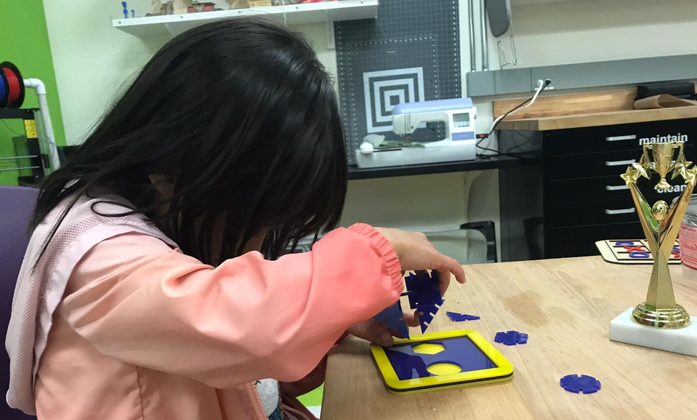
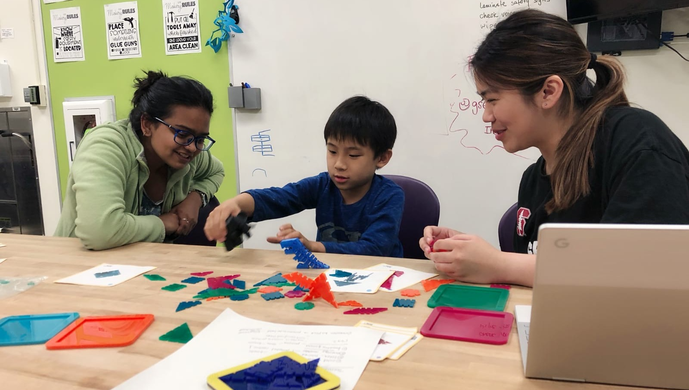
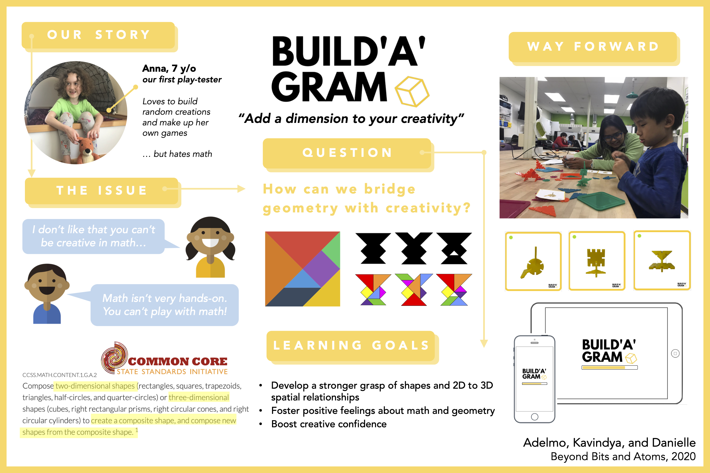

Buildagram
Developing a constructionist kit to bridge the gap between geometry and creativity
Published work in the 2020 Interaction Design and Children Conference.
Overview
Buildagram is a construction set that empowers learners to make their ideas concrete by exploring mathematical shapes and relations. Designed with Adelmo Eloy and Kavindya Thennakoon, under the guidance of Wayne Grant from the Learning Design Technology Program at the Stanford Graduate School of Education.
Problem
"I love building, but I hate math."
— Anna, 7 year old
A foundational skill in mathematics education, spatial reasoning describes the cognitive processes that enable learners to navigate between two- and three-dimensional perspectives.
Geometry concepts like spatial reasoning are an integral part of mathematics education starting as early as in first grade (Common Core). However, math is rarely thought of as hands-on or play-oriented amongst young children; traditional approaches to developing spatial reasoning skills have often contributed to a view of geometry and creativity as mutually exclusive.
How might we bridge the gap between the two for kids like Anna?
Solution
Inspired by the tangram puzzle, we designed Buildagram, a laser-cut construction kit made of acrylic that combines the creativity of free play with the structure of geometry.

An environment for spatial reasoning. Buildagram allows learners to take two-dimensional shapes and transform them into boundless three-dimensional creations, helping them better understand the relations between different dimensions.

What comes with Buildagram. The set consists of tangram construction pieces, projection cards, and digital tools. Children can use different combinations of 2-D projection cards to deduce the 3-D model, or they can freely explore and build out any ideas from imagination.

Learning benefits. By playing with multiple representations of angles and polygons, kids develop spatial abilities — a strong predictor of success in STEM fields. They develop positive feelings about math and boost their creative confidence, all without sacrificing their artistic freedom.
Publication
Our work was selected for publication and presentation at the 2020 Interaction Design and Children conference, originally scheduled to be hosted in London.

Kavi and I play-testing with an eight-year-old boy.

The poster for our final presentation.